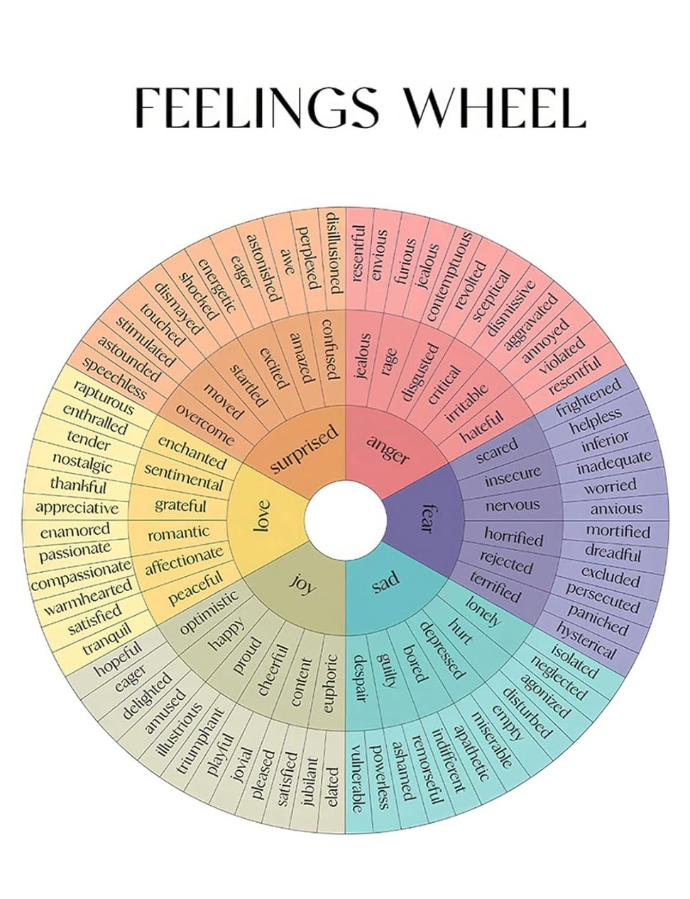

When you feel sad
When you feel sad...
Try listening to those "sad songs" instead of the "happy/cheerful songs". Your mind needs to feel heard and echoed.
And LOOP IT. REPEAT IT UNTIL YOU WANNA TURN IT OFF. The repetition creates a "comfort zone" so you don't have to worry about "what's next?"
Recently I listen to...
- "WILDFLOWER" by Billie Eilish (Billie mentioned in her documentary that she writes sad music because she believes people need it.)
I also listened to Rauf & Faik a few years ago when I lost someone who spoke a Slavic language haha. I went jogging with it looped, for the whole afternoon. This was how I figured out that it helps.
Everybody feels sad. It's totally normal and okay. It's what makes us human and alive.
Btw there's a FEELINGS WHEEL:

And if you're not necessarily feeling sad but feeling disliked:
You've probably heard of this book but maybe now it's the time to check it out / revisit - "The Courage to be Disliked" written by Fumitake Koga and Ichiro Kishimi.
luv ya ❤️